5
Using Plug-Ins
This chapter covers the following topics:
About Plug-ins
Plug-ins are applications that are added to the Hierarchy Editor and that are used from the Hierarchy Editor user interface. Some Cadence products have been added to the Hierarchy Editor as plug-ins.
The Plug-Ins Menu
If at least one plug-in has been added to the Hierarchy Editor, the Hierarchy Editor menu bar displays the Plugins menu. If the Plugins menu is not present, no plug-ins are available with the Hierarchy Editor.
Loading Plug-In Applications
The Plugins menu contains all the applications that are available from the Hierarchy Editor. To use any application listed in the menu, you must first load it. The Hierarchy Editor does not load the plug-ins by default.
When you load a plug-in application, it appears in the Hierarchy Editor, typically as a menu on the menu bar or an icon on the tool bar. You can load a plug-in either from the command line when you start the Hierarchy Editor or from the Hierarchy Editor user interface.
Loading a Plug-In from the Hierarchy Editor User Interface
To load a plug-in application from the Hierarchy Editor user interface,
-
Start the Hierarchy Editor.
The Plugins sub-menu appears in the Launch menu. The menu lists the applications that you can load. A check mark next to a menu item indicates the application is already loaded. -
Choose Launch – Plugins and select a plugin that you want to load, for example, AMS HDL Settings.
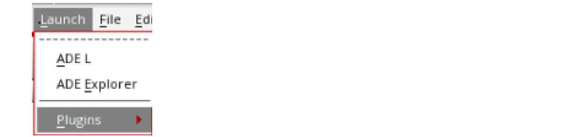The application appears in the Hierarchy Editor as specified by the plug-in. For instance, it could appear as an additional menu in the Hierarchy Editor menu bar or an icon in the Hierarchy Editor tool bar. - (Optional) If you want the Hierarchy Editor to automatically load the plug-in application every time it starts, save the Hierarchy Editor defaults with the File – Save Defaults command.
Loading a Plug-in from the Command Line
To load a plug-in application from the command line,
-
Start the Hierarchy Editor with the following command:
cdsHierEditor -plugin
pluginName[pluginOptions]
To load more than one plug-in, use the following format:
cdsHierEditor -pluginpluginName[pluginOptions] -pluginpluginName[pluginOptions] ...
-plugin must be the last argument specified with the cdsHierEditor command. It can be followed only by other -plugin arguments.When the Hierarchy Editor starts, the plug-in application appears in the Hierarchy Editor graphical user interface, typically as a menu in the menu bar or an icon in the tool bar.
- (Optional) If you want the Hierarchy Editor to automatically load the plug-in application every time it starts, save the Hierarchy Editor defaults with the File – Save Defaults command.
Checking Imported Packages
The Package Importing Checker functionality allows you to view a list of imported packages, comprising VHDL and SystemVerilog (SV) modules and their dependency relationships. In addition, it enables you to find errors and rectify them during simulation before netlisting a design. This, in turn, helps in reducing the errors that are generated during netlisting and saves time.
To view the list of imported packages using the built-in AMS UNL plugin available in HED, perform the following steps:
-
To enable AMS UNL plugin, choose Launch – Plugins – AMS HDL Settings from the Virtuoso Hierarchy Editor window.
Once the plugin is enabled, the AMS UNL menu is added to the HED menu.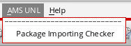 - To view the list of imported packages, choose AMS UNL – Package Importing Checker. The Package Checking Viewer form is displayed.
The components of the Table View tab on the Package Checking Viewer form are:
- Refresh: Refreshes the list of packages in the Package Summary area.
-
Full List: Displays the built-in packages in the Package Summary area.
- List Details: Displays the associated source files log and dependents’ list of the selected package.
- Package Summary: Displays the list of packages.
- Package Details: Displays the source file and dependents’ list of the selected package.
When you click the Tree View tab on the Package Checking Viewer form, a list of packages and their dependency relationships are displayed, as shown below.
Introducing Pin Checker
Pin Checker is a tool that checks the connections between an instance and it’s master in the config design. A config design can consist of both text and non-text cellviews.
Pin Checker helps you to find the mismatch in the connectivity and allows you to fix the issues before netlisting. This, in turn, helps in reducing the errors that are generated during netlisting and saves time.
It performs the following checks:
- If the parent containing the instance is text, then it checks the connectivity of the instance and it’s switch master. It compares the number and size of terminals in the switch master with the instance.
-
If the parent containing the instance is schematic, then it performs the following checks:
- Checks the connectivity of the instance and it’s place master. It compares the number of terminals in the place master with the instance.
-
Checks the connectivity of instance’s place master and switch master. It compares the number and direction of terminals between the switch master and the place master.
Enabling Pin Checker
To enable Pin Checker, select Launch — Plugins — Pin Checker from the Virtuoso Hierarchy Editor window.
Once the plugin is enabled, the Pin Checker menu is added to the HED menu items. In addition, the Global Pin Check 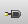 button is also displayed on the HED toolbar.
For more information on Virtuoso Hierarchy Editor, see Virtuoso Hierarchy Editor Overview.
Modes of Pin Checking
Global Pin Check
You can perform hierarchical pin check on all the instances in a design. To do this, you need to perform one of the following steps:
- Select Global Pin Check from the Pin Checker menu.
-
Click the Global Pin Check button on the HED toolbar.
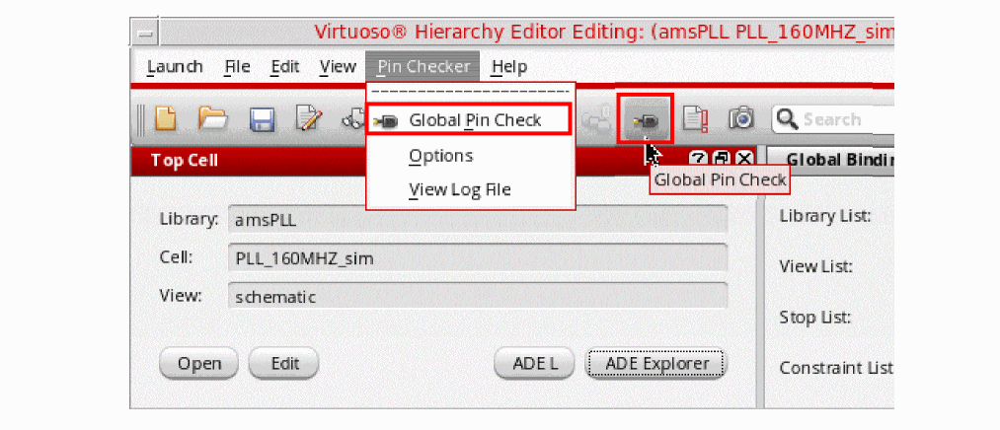
After the pin checking operation on a design is successfully completed without any error or warning, a successful pin check message is displayed in CIW.
If there is any error or warning in the design, the unsuccessful pin check message is displayed in CIW and the pin check log file is displayed.
For more information on the Pin Check log file, see Log File Creation.
Instance Pin Check
Single Instance Pin Check
To perform pin checking on a single instance, in the Tree View of the Virtuoso Hierarchy Editor window, right-click the instance and select Pin Check Instance from the context-sensitive menu.
After pin checking is successfully completed without any error or warning on the selected instance, the successful pin check message is displayed in CIW.
If there is any error or warning in the design, the unsuccessful pin check message is displayed in CIW and the Pin Check log file is displayed.
For more information on the Pin Check log file, see Log File Creation.
Apart from this, you can perform pin checking on a particular instance of the selected cell. To do this, you need to perform the following steps:
-
Open the Instance Bindings section in the Tree View by selecting View – Instance Table from the Virtuoso Hierarchy Editor window.
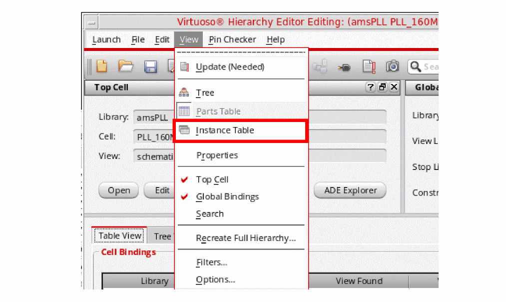 -
The Instance Bindings section is displayed in the Table View that lists all the instances of the cell, which is selected in the Cell Bindings section.
-
To perform pin checking on a single instance of the selected cell, right-click the instance in the Instance Bindings section and select Pin Check Instance from the context-sensitive menu.
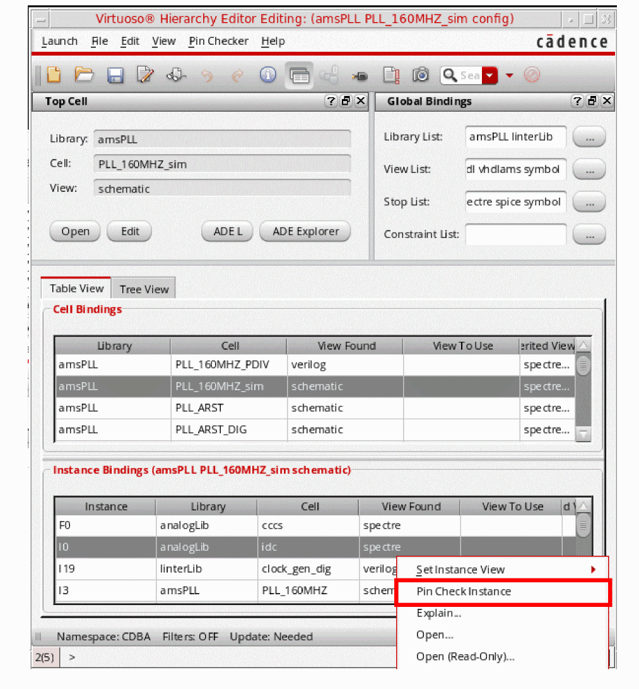
Multiple Instances Pin Check
You can also select multiple instances for pin checking. To do this, you need to perform the following steps:
-
In the Tree View of the Virtuoso Hierarchy Editor window, select multiple instances by using the
CtrlorShiftkey with the left mouse button. -
Right-click the selected instances and choose Pin Check Multiple Selections from the context-sensitive menu.
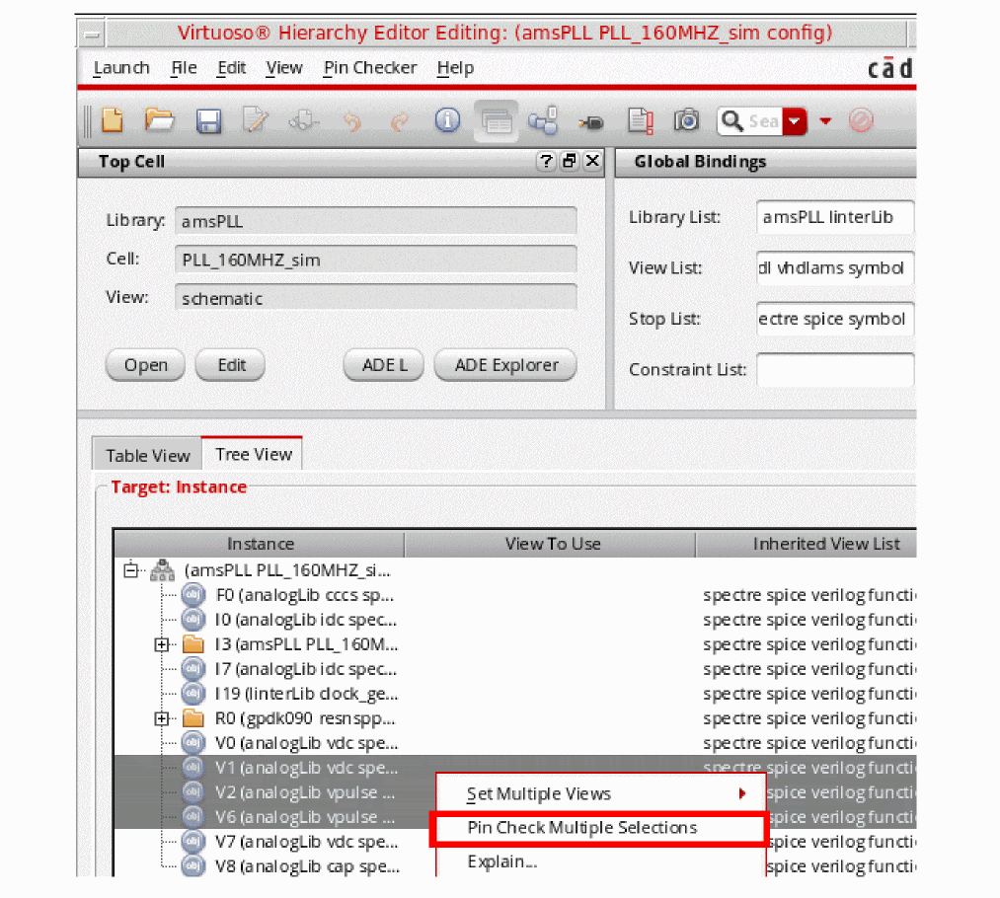
After pin checking is successfully completed without any error or warning on multiple instances, the successful pin check message is displayed in CIW.
If there is any error or warning in the design, the unsuccessful pin check message is displayed in CIW and the Pin Check log file is displayed.
For more information on the Pin Check log file, see Log File Creation.
Apart from this, you can perform pin checking on multiple instances of the selected cell. To do this, you need to perform the following steps:
-
Open the Instance Bindings section in the Tree View by selecting View – Instance Table from the Virtuoso Hierarchy Editor window.
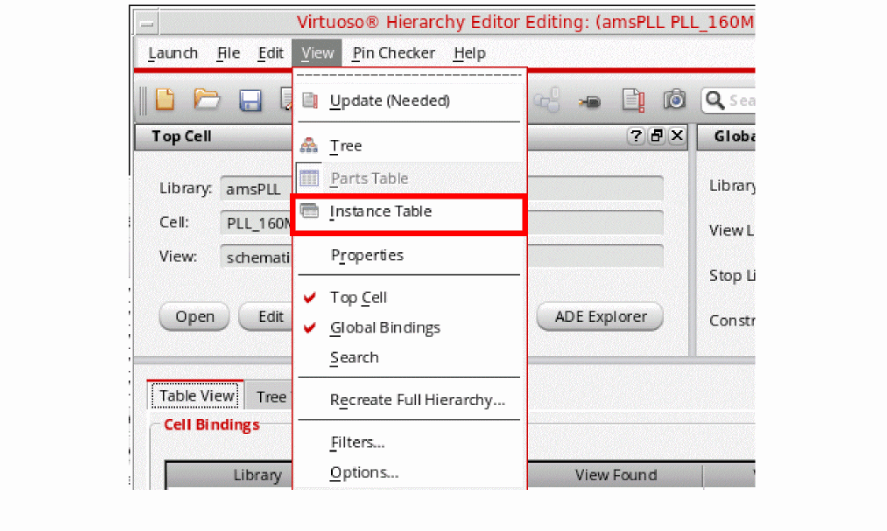 -
The Instance Bindings section is displayed in the Table View that lists all the instances of the cell, which is selected in the Cell Bindings section.
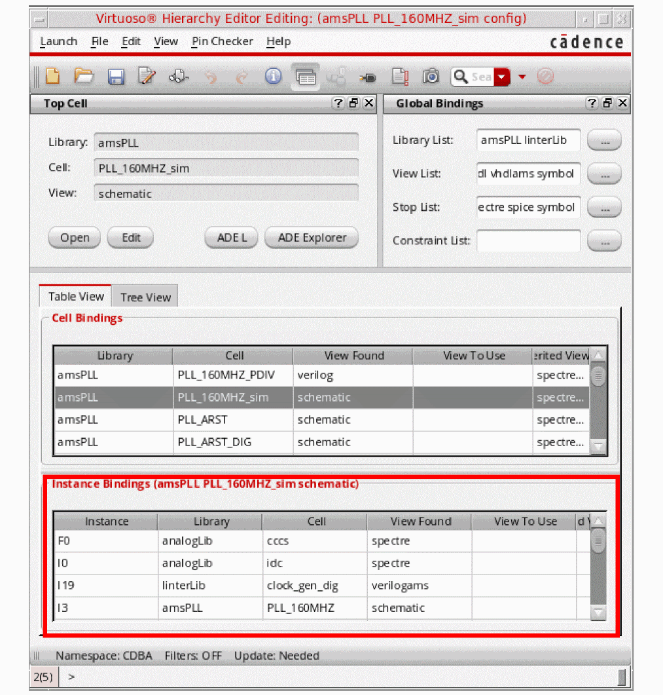 -
To perform pin checking on multiple instances of the selected cell, select multiple instances from the Instance Bindings section by using the
CtrlorShiftkey with the left mouse button. -
Right-click the selected instances and select Pin Check Multiple Instances from the context-sensitive menu.
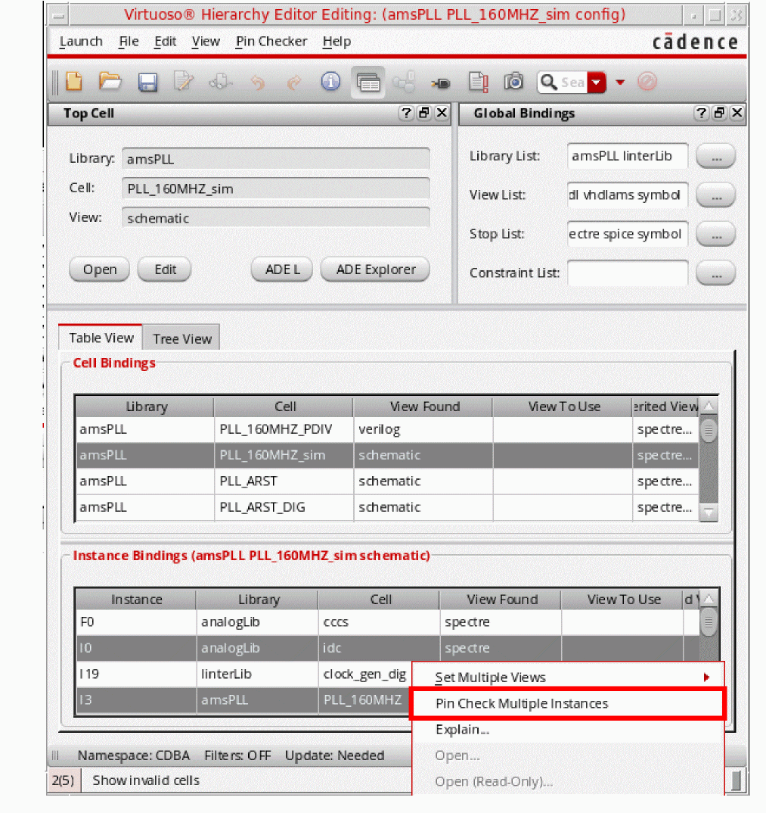
Cell Instantiation Pin Check
Single Cell Instantiation Pin Check
You can perform pin checking on a particular cell at all the places where it is instantiated in a design. To do this, in the Table view of the Virtuoso Hierarchy Editor window, right-click the Cell Bindings row and select Pin Check Cell Instantiations from the context-sensitive menu.
After cell instantiation is successfully completed without any error or warning on all the instances, the successful pin check message is displayed in CIW.
If there is any error or warning in the design, the unsuccessful pin check message is displayed in CIW and the Pin Check log file is displayed.
For more information on the Pin Check log file, see Log File Creation.
Multiple Cell Instantiations Pin Check
You can perform pin checking on multiple cells at all the places where they are instantiated in a design. To do this, you need to perform the following steps:
-
In the Table view of the Virtuoso Hierarchy Editor window, select multiple cells from the Cell Bindings section by using the
CtrlorShiftkey with the left mouse button. -
Right-click the selected cells and select Pin Check Multiple Cell Instantiations from the context-sensitive menu
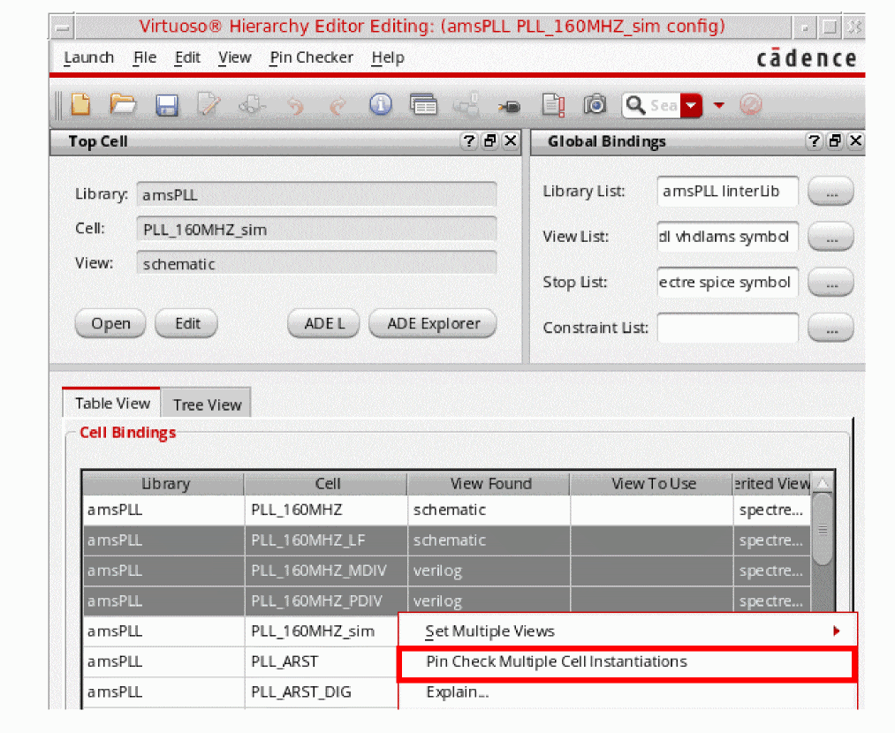
After Pin Check for instantiations of multiple cells is successfully completed without any error or warning, the successful pin check message is displayed in CIW.
If there is any error or warning in the design, the unsuccessful pin check message is displayed in CIW and the Pin Check log file is displayed.
For more information on the Pin Check log file, see Log File Creation.
Log File Creation
A log file with the name pincheck_<library name>_<cell name>_<view name>.log is created in the current working directory, by default. Here, <library_name; cell_name; view_name> are the library, cell, and view names of the current config window where pin checking has been performed. This log file contains the error and warning messages if the pin checker finds any issues during the pin checking operation. For successive pin checking operations, error and warning messages are appended in the log file. A log file window is also displayed showing the content of the log file.
For example, if you are working on a design where the library name is amsPLL, the cell name is PLL_160MHZ_sim, and the view name is config. Then, the Pin Check log file will be created with the name, pincheck_amsPLL_PLL_160MHZ_sim_config.log.
Changing Log File Creation Path
To change the log file creation path, you need to set the pcLogFilePath environment variable in CIW as shown below:
envSetVal("pinCheck" "pcLogFilePath" 'string "<file path>")
Default value of this environment variable is the current working directory.
Log File Modes
Pin checker logs can be stored in the log file in the append or overwrite mode:
To write or store the logs in the append mode, you need to set the pcLogFileOpenMode environment variable in CIW as shown below:
envSetVal("pinCheck" "pcLogFileOpenMode" 'cyclic "append")
-
overwrite: Adds the latest pin checking result in the log file and removes the previous pin checking results from the log file.
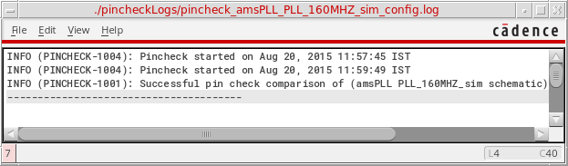
To write or store the logs in the overwrite mode, you need to set the pcLogFileOpenMode environment variable in CIW as shown below:
envSetVal("pinCheck" "pcLogFileOpenMode" 'cyclic "overwrite")
Viewing Log File Window
To view the log file in a window, you need to select Pin Checker — View Log File.
It will show the log file contents in a window.
Pin Checker Options Form
To open the Pin Checker Options form, select Pin Checker – Options from the Virtuoso Hierarchy Editor window.
Dynamic pin check
When the Dynamic pin check check box is selected, pin checking is automatically performed if the view of a cell or an instance gets changed using the RMB options. The updated value will be applicable to all the open HED windows.
To change the view of a cell, right-click the cell in the Table View and select the Set Cell View option from the context-sensitive menu.
For more information on changing the view of a cell using the RMB option, see
Similarly, to change the view of an instance, right-click the instance either in the Table View or Tree View and select the Set Instance View option from the context-sensitive menu.
For more information on changing the view of an instance using the RMB option, see
By default, the Dynamic pin check check box is selected in the Pin Checker Options form.
AMS-UNL checks
When the AMS-UNL checks check box is selected, the issues related to the mismatch of vector and split ports on the place master and switch master are resolved in Pin Checker.
These checks are already implemented in AMS-UNL netlister.
For example, an instance has the following ports on place master and switch master:
As per the above scenario, the place master has split ports and the switch master has vector ports. Although, both place master and switch master have the same ports, Pin Checker reports an error during the pin check operation because it does the exact matching of the ports.
However, if the AMS-UNL checks field is selected, the pin check operation is completed successfully because the Pin Checker compares each member of the vector port of switch master with place master’s port.
Removing Plug-In Applications
To remove a plug-in application from the Hierarchy Editor,
The application menu or toolbar icon disappears from the Hierarchy Editor. Also, in the Plugins menu, the application name no longer has a check mark next to it, which indicates that the plug-in is not loaded.
You can load the plug-in application again by selecting it from the Plugins menu.
Return to top